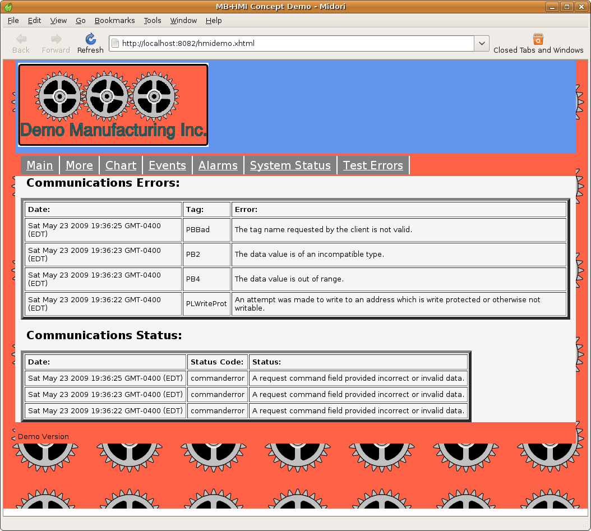

MBLogic
for an open world in automation
MBLogic
for an open world in automation
Help - HMI Alarms, Events, and Errors
Overview:
The HMI can display alarms, events, and communications errors. The alarms, events, and errors are generated by the HMI server by monitoring the alarm and event tag data based on the system configuration.
Alarms:

Alarms are messages which indicate that a fault condition is present. The alarm message will remain visible until the message has been acknowledged by the operator and the input representing the fault has been reset.
Alarms:
Alarms exist in the following states:
- Inactive - The condition being monitored does not have any faults present, and there is no associated alarm message waiting to be acknowledged.
- Active - A fault condition is present and the alarm message has not been acknowledged by the operator.
- Acknowledged - The fault condition is present, and the operator has acknowedged the alarm message.
- OK - The fault condition is no longer present, but the operator has not acknowledged the alarm message yet.
Only alarms in the "active", "acknowledged", or "OK" states will be displayed. There will be no messages visible in the alarm table for "inactive" alarms.
An alarm message represents the current state of the fault. This state is updated on each poll. Alarms are detected by the HMI server by monitoring a boolean value which is defined in the configuration. When that boolean value is true, a fault is considered to be present. If the boolean value is false, the fault is considered to be no longer present.
Each alarm message is associated with one monitored value. This means that there cannot be more alarm messages present than there are monitored fault conditions. That is, if the alarm configuration has defined 10 fault conditions to monitor, there will not be more than 10 alarm messages displayed on the alarm screen.
Each alarm message will contain the following information:
- The alarm text. This is a description of the alarm. The text for this is provided by the user.
- The alarm state. This describes the current state of the alarm (e.g. "inactive", "active", "acknowledged", etc.). The text for this is provided by the user and does not have to match the names used in this documentation.
- The time. This is the time stamp applied by the server at the time when the alarm was detected. The time stamp is applied by the server, but the time displayed is determined by the locale setting on the web browser.
- Time OK. This is the time at which the fault condition became OK.
- Count. This is the number of times the fault condition has appeared (the monitored value has changed from false to true) during the time this alarm message has been displayed. Once the alarm has disappeared from the screen, this count is reset.
Alarm messages are colour coded according to their current state. The colours used are configured by passing appropriate parameters to the alarm library Javascript object when it is initialised.
Acknowledging Alarms:
"Acknowledging" an alarm means that the operator has taken an action to indicate that he has seen the alarm messages. The alarm is acknowledged when an HMI client (web browser) sends an alarm acknowledge message to the HMI server. The server will add this acknowledge request to the current state of the alarm message, and the new state will be reflected in the reply from the server to the HMI client. The client does not change the alarm display table based on the acknowledge. It waits for the actual change in the alarm state in the normal response from the server.
An alarm acknowledge request is normally triggered by the operator activating (clicking on) a button or other similar control. The means used for this is determined by the HMI application (web page) programmer.
When the client sends an alarm acknowledge request to the server, it requests that all the outstanding alarms be acknowledged. The operator does not acknowledge each alarm individually.
Alarm History:
When an alarm message has changed from the active to inactive state, a copy of the message is added to the alarm history. The alarm history is a sequential record of alarms. Each time an alarm becomes inactive, a copy of the message is added to the history. This means that the same alarm message may appear multiple times in the alarm history display table.
Alarm history messages are saved by the server in an "alarm history buffer". When the HMI client starts up, it requests all outstanding alarm history messages (up to a maximum). Subsequent to this, the HMI client will ask only for any new messages that it does not already have. This is controlled automatically by the communications library.
When a new alarm history message is received, it is added to the top of the alarm history table. The table has a fixed maximum size. When the table reaches this maximum size, older messages are discarded.
Because the alarm history messages are stored in the server, they are not lost when the web browser is restarted or when the page is reloaded.
Each alarm history message includes the following information:
- The alarm text. This is the description of the alarm found in the original alarm message.
- The alarm time. This is the time as which the alarm originally became active.
- Time OK. This is the time at which the fault condition became OK
- Ack by. This is ID string of the client which acknowledged the alarm. The client ID string is set in the client communications configuration.
HTML
<h2>Active Alarms:</h2> <p> <svg xmlns="http://www.w3.org/2000/svg" xmlns:html="http://www.w3.org/1999/xhtml" width="250px" height="75"> <defs> <!-- The following filter is used to add a drop shadown. --> <filter id="AlarmDropShadowFilter"> <feGaussianBlur stdDeviation="2"> </feGaussianBlur> </filter> <!-- For violet buttons. --> <linearGradient id="AlarmGradient" x1="1" y1="1" x2="0" y2="0"> <stop offset="50%" stop-color="violet" /> <stop offset="100%" stop-color="white" /> </linearGradient> <!-- Rectangular push button. --> <g id="MB_AlarmPB"> <!-- This rectangle is used for the drop shadown. --> <rect x="-73" y="-18" width="160" height="50" rx="15" fill="grey" stroke="none" stroke-width="0px" filter="url(#AlarmDropShadowFilter)"/> <!-- This is the actual button. --> <rect x="-80" y="-25" width="160" height="50" rx="15"/> </g> </defs> <!-- Push button to acknowledge alarms. --> <g transform="translate(100, 35)" fill="url(#AlarmGradient)" class="buttonactivate" onclick="MBHMIProtocol.AddAlarmAck();"> <!-- This is the actual button. --> <use xlink:href="#MB_AlarmPB" /> <!-- This is the text label. --> <text x="-65" y="8" font-size="20" stroke-width="2px">Acknowledge</text> </g> </svg> </p> <p> <!-- This is the table used to display the alarms. --> <table id="AlarmDisplay" border="5" cellpadding="5"> <tr> <td><b>Alarm:</b></td> <td><b>Alarm State:</b></td> <td><b>Time:</b></td> <td><b>Time OK:</b></td> <td><b>Count:</b></td> </tr> </table> </p> <h2>Alarm History:</h2> <!-- This is the table used to display the alarm history. --> <p> <table id="AlarmHistoryDisplay" border="5" cellpadding="5"> <tr> <td><b>Alarm:</b></td> <td><b>Alarm Time:</b></td> <td><b>Time OK:</b></td> <td><b>Ack By:</b></td> </tr> </table> </p>
Javascript:
// This is to display the alarms. var AlarmDisplay = new MB_AlarmDisplay(document, "AlarmDisplay", alarm_text, alarmstates_text, "red", "orange", "green"); // Add this to the display list. MBHMIProtocol.AddToDisplayList(AlarmDisplay, "alarms", "alarms"); // This is to display the alarm history. var AlarmHistoryDisplay = new MB_AlarmHistoryDisplay(document, "AlarmHistoryDisplay", 50, alarm_text); // Add this to the display list. MBHMIProtocol.AddToDisplayList(AlarmHistoryDisplay, "alarmhistory", "alarmhistory");
Javascript Library Functions:
The following Javascript library functions are useful for this feature:
- MB_AlarmDisplay
- MB_AlarmHistoryDisplay
- MBHMIProtocol.AddAlarmAck
Alarm Message Texts:
Alarm messages indentify the particular alarms via "alarm tags". The actual texts for the messages is not sent with the message. Instead, the alarm and alarm history objects must be initialised with a data structure associating the alarm tag with the text to be displayed. This data structure is in the form of a standard Javascript "object literal". The format for this is shown below. For example "PB1Alarm" is an alarm tag, and "PB1 was pressed." is the actual text that will be displayed. The alarm tag must match the names used in the server configuration file.
alarm_text = {
"PB1Alarm" : "PB1 was pressed.",
"PB2Alarm" : "PB2 was pressed.",
"PB3Alarm" : "PB3 was pressed.",
"PB4Alarm" : "PB4 was pressed."
}
How it works:
The alarm and alarm history display is implemented by creating HTML tables and then updating their data using Javascript. In the above examples, only the table headings are shown. The additional table rows are added and removed as necessary by the Javascript alarm and event libraries.
The headings used in the HTML tables do not matter. However the number and order of each column is fixed and cannot be changed without modifying the Javascript library code.
Each table is given a unique "id" (e.g. id="AlarmDisplay" and id="AlarmHistoryDisplay") which is passed to the Javascript library objects to tell them which tables to use.
The majority of the HTML shown above is actually associated with creating a push button for acknowledging the alarms. In this case an SVG push button was added to the page, but an HTML or XUL push button could also have been used. The button uses onclick="MBHMIProtocol.AddAlarmAck();" to send an ackowledge message to the server.
The display is initialised by creating an object for displaying alarms, and another object for displaying the alarm history. Each is then added to the display list.
The alarm display is initialised with a reference to the alarm display table, object literals containing the alarm message texts and the alarm states texts, and the colours to be used for highlighing the alarm states.
The alarm history display is initialised with a reference to the alarm history display table, the maximum number of alarm history messages to display, and the alarm message texts.
When alarms and alarm history messages are received, the alarm and alarm history display tables are automatically updated via the display list.
Events:

Events are messages representing the occurance of incidents about which the operator should be notified, but for which the operator does not normally need to take any action. Unlike alarms, the operator does not acknowledge events.
Events are detected by the HMI server by monitoring a boolean value which is defined in the configuration. When that boolean value changes state from true to false or from false to true, an event message is generated.
Each event is associated with a monitored value. The event messages represent a sequential record. Each time an event is generated, a copy of the message is added to the sequence. This means that the same event may appear multiple times in the event display table.
Event messages are saved by the server in an "event buffer". When the HMI client starts up, it requests all outstanding event messages (up to a maximum). Subsequent to this, the HMI client will ask only for any new messages that it does not already have. This is controlled automatically by the communications library.
When a new event message is received, it is added to the top of the event table. The table has a fixed maximum size. When the table reaches this maximum size, older messages are discarded. Because the event messages are stored in the server, they are not lost when the web browser is restarted or when the page is reloaded.
Event messages include the following information:
- The event number. This is a sequential number generated by the server track the event messages.
- The event time. This is the time as which the event was generated.
- The event text. This is the description of the event.
- State. This is a value indicating the state of the event (0 for off, 1 for on).
HTML
<h2>Events:</h2> <p> <!-- This is the table used to display the events. --> <table id="EventDisplay" border="5" cellpadding="5"> <tr> <td><b>Event #:</b></td> <td><b>Date:</b></td> <td><b>Event:</b></td> <td><b>State:</b></td> </tr> </table> </p>
Javascript:
// Event Screen items. // This is to display the events. var EventDisplay = new MB_EventDisplay(document, "EventDisplay", 50, event_text); // Add this to the display list. MBHMIProtocol.AddToDisplayList(EventDisplay, "events", "events");
Javascript Library Functions:
The following Javascript library functions are useful for this feature:
- MB_EventDisplay
Event Message Texts:
Event messages indentify the particular alarms via "event tags". The actual texts for the messages is not sent with the message. Instead, the event object must be initialised with a data structure associating the event tag with the text to be displayed. This data structure is in the form of a standard Javascript "object literal". The format for this is shown below. For example "PumpRunning" is an event tag, and "PBTank pump is running." is the actual text that will be displayed. The event tag must match the names used in the server configuration file.
event_text = {
"PumpRunning" : "Tank pump is running.",
"PumpStopped" : "Tank pump is stopped.",
"Tank1Empty" : "Tank 1 is empty.",
"Tank1Full" : "Tank 1 is full.",
"Tank2Empty" : "Tank 2 is empty.",
"Tank2Full" : "Tank 2 is full."
}
How it works:
The event display is implemented by creating an HTML table and then updating its data using Javascript. In the above examples, only the table headings are shown. The additional table rows are added and removed as necessary by the Javascript alarm and event libraries.
The headings used in the HTML table do not matter. However the number and order of each column is fixed and cannot be changed without modifying the Javascript library code.
The table is given a unique "id" (e.g. id="EventDisplay") which is passed to the Javascript library object to tell it which table to use.
The display is initialised by creating an object for displaying events, which is then added to the display list. The event display is initialised with a reference to the event display table, the maximum number of event messages to display, and the event message texts.
When event messages are received, the event display table is automatically updated via the display list.
Errors and Communications Status:

Communications errors and communications status shows the result of any errors which may have been returned by the server in its response. The "status" simply shows whether the overall response contains an error.
The "errors" provides information in cases where the client may have attempted to perform an action which is not permitted. For example, the client may have referenced a tag name which does not exist, or may have attempted to write a value which is out of range for the data type.
When a new message is received, it is added to the top of the appropriate display table. The tables have a fixed maximum size. When the table reaches this maximum size, older messages are discarded. The size of these tables is set by the application (web page) programmer when initialising them.
Error and status messages are not saved by the server. They are only save in the client. When the HMI client is restarted or the web page is reloaded, any existing error or status messages are lost.
HTML
<h2>Communications Errors:</h2> <!-- This is the table used to display the communcations errors. --> <p><table id="ErrorDisplay" border="5" cellpadding="5"> <tr> <td><b>Date:</b></td> <td><b>Tag:</b></td> <td><b>Error:</b></td> </tr> </table> </p> <h2>Communications Status:</h2> <!-- This is the table used to display the coummunications status. --> <p><table id="StatusDisplay" border="5" cellpadding="5"> <tr> <td><b>Date:</b></td> <td><b>Status Code:</b></td> <td><b>Status:</b></td> </tr> </table> </p>
Javascript:
// This is to display the communications errors. var ErrorDisplay = new MB_TagErrorDisplay(document, "ErrorDisplay", 50, error_text); // Add this to the display list. MBHMIProtocol.AddToDisplayList(ErrorDisplay, "errors", "errors"); // This is to display the communications status log. var StatusLogDisplay = new MB_StatusLogDisplay(document, "StatusDisplay", 50, status_text); // Add this to the display list. MBHMIProtocol.AddToDisplayList(StatusLogDisplay, "status", "status");
Javascript Library Functions:
The following Javascript library functions are useful for this feature:
- MB_TagErrorDisplay
- MB_StatusLogDisplay
How it works:
The status and error displays are implemented by creating HTML tables and then updating them with data using Javascript. In the above examples, only the table headings are shown. The additional table rows are added and removed as necessary by the Javascript status and error library.
The headings used in the HTML tables do not matter. However the number and order of each column is fixed and cannot be changed without modifying the Javascript library code.
The tables are each given a unique "id" (e.g. id="ErrorDisplay" and id="StatusDisplay") which are passed to the Javascript library objects to tell them which tables to use.
The display is initialised by creating an object for displaying status, and another object for errors, which are then added to the display list. Each display is initialised with a reference to the appropriate display table, the maximum number of messages to display, and the message texts.
When errors or status are detected, the display tables are automatically updated via the display list.
Alarm and Event Zones:
Every alarms or events is associated with one or more "zones". This associaion is made via the server configuration. When a web client requests alarms or events, it does so by requesting one or more alarm or event zones. Any alarms or events which are not associated with the requested zone(s) are not sent in the response. This permits a client to only receive alarms or events which are relevant to it and to filter out any which are not.
Alarm zones are independent from event zones. The same name may be used for both an alarm zone and an event zone without affecting each other.
Which alarm and event zones are requested by the client is set by the configuration used when initialising the protocol communications library. A list of alarm zones and a separate list of event zones are passed to the library upon initialisation. An example of this is shown below. Details of the other parameters used by HMIClient are not discussed here (see the documentation on communications for more details).
Javascript:
// Make a list of the alarm and event zones to be monitored. Zones are // used to filter alarms and events to only those we are interested in. var AlarmZoneList = ["zone1", "zone2", "zone3"]; var EventZoneList = ["zone1", "zone2", "zone3"]; /* This handles communications with the server. The configuration parameters are read from a file. The final parameter enables asynchronous communications. */ /* This handles communications with the server. The parameters are: 1) The host name the web page was loaded from. 2) The port number the web page was loaded from. 3) The client ID string. 4) The list of tags to poll for data. 5) The list of alarm zones to poll for new alarms. 6) The list of event zones to poll for new events. 7) true = Enable asynchronous communications. The first two parameters use a standard Javascript feature. Alternatively, these can be hard coded values if the host and port are known in advance. */ var MBHMIProtocol = new HMIClient(window.location.hostname, window.location.port, "HMI 9876 from Water Pressure INC.", ReadList, AlarmZoneList, EventZoneList, true);
In the above example, the alarm and event zones were given the same name. However the names are arbitrary and there is no requirement to use the same zone names or to request the same number of zones.
Loading Alarm, Event, and Error Message Texts:
It is often convenient to load the messages from an external file rather that incorporating them into the web page itself. Because the messages are stored in standard Javscript "object literal" format, they can be loaded as an external Javascript file. The code for this is shown below. This should be located at the beginning of the web page where other external resources are being loaded.
<!-- Alarm and event text message definitions. --> <script type="text/javascript" src="eventstext.js"></script>
Because the message texts themselves are not sent as part of the message, it is possible to support different languages simultaneously. The web page for that language simply has to import the file with the correct translation.